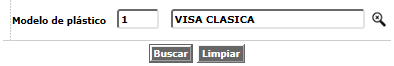
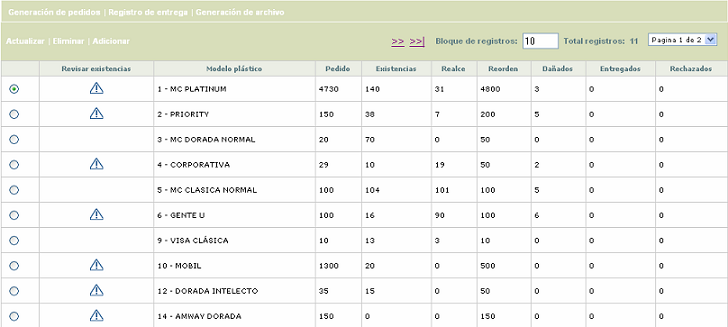
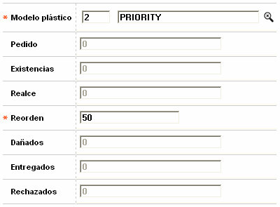
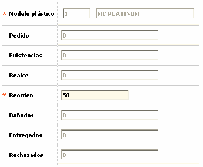
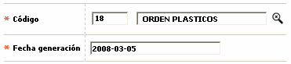

Inventario de pl�sticos |
Mediante esta opci�n la entidad puede implementar el control de los pl�sticos suministrados por los diferentes proveedores para ser utilizados en los procesos de realce y embosado de las tarjetas.
El manejo del inventario de los pl�sticos requiere entre otras condiciones que el campo Control de remisi�n de pl�sticos, contenido en la opci�n Par�metros operativos se encuentre marcado en 'Si', que se aplique Control de inventario a los pl�sticos bien sea de manera manual o mediante el proceso de Cargue de archivo de inventario, y que se aplique acuse de recibo para las diferentes tarjetas.
Con el fin de poder aplicar masivamente el control de inventario y el acuse de recibo mediante los cargues contenidos en el aplicativo, se necesita que en la estructura del archivo de realce se parametrice la secuencia para todos los modelos de la entidad.
La opci�n cuenta con los hiperv�nculos Generaci�n pedidos, Registro de entrega y Generaci�n de archivo que invocan otros formularios que complementan el proceso de inventario de los pl�sticos.
El formulario contiene un filtro que le permite al usuario seleccionar por medio de una lista de valores el modelo de pl�stico para el que se desea consultar la informaci�n.

Si el usuario no selecciona ning�n registro para consutar, al ingresar al formulario inicial �ste por defecto despliega la totalidad de los registros existentes. El primer campo del formulario, Revisar existencias, muestra un indicador para aquellos modelos para los cuales el sistema detecta que las existencias actuales se encuentran por debajo del punto de reorden y por lo tanto deben ser revisados para generar el pedido correspondiente al proveedor.

El formulario contiene las opciones Actualizar, Eliminar y Adicionar.
Adicionar: si el usuario invoca la opci�n Adicionar se despliega un nuevo formulario con los siguientes campos.

Descripci�n de campos
Modelo |
Campo obligatorio con lista de valores que permite seleccionar el modelo de pl�stico para el que se desea llevar el inventario a trav�s de la presente opci�n. |
Pedido |
Este campo indica la cantidad de unidades del modelo que le han sido solicitadas al proveedor del mismo. Por defecto al adicionar un registro se muestra con el valor '0' |
Existencias |
Campo que muestra la cantidad de unidades del modelo pl�stico que actualmente tiene disponible la entidad en su inventario y que resulta de sumar las cantidades recibidas del proveedor como resultado de los pedidos efectuados y restarle los pl�sticos que han sido utilizados durante el proceso de realce. Por defecto al adicionar un registro se muestra con el valor '0' |
Realce |
Este campo indica la cantidad de unidades del modelo que le han sido entregadas a los diferentes proveedores de realce como resultado de la generaci�n de los archivos de realce de tarjetas que utilizan este modelo de pl�stico. Por defecto al adicionar un registro se muestra con el valor '0' |
Reorden |
Campo obligatorio en el cual se indica la cantidad m�nima de existencias que por modelo debe tener disponibles la entidad para atender sus demandas de pl�sticos para el realce de las tarjetas, y que constituye el punto en el cual se debe generar un nuevo pedido al proveedor. |
Da�ados |
Este campo indica la cantidad de unidades del modelo que se han da�ado o averiado durante los procesos de realce. Por defecto al adicionar un registro se muestra con el valor '0' |
Entregados |
Este campo indica la cantidad de unidades del modelo que despu�s de haber sido realzadas han sido entregadas efectivamente a los clientes titulares de las tarjetas. Por defecto al adicionar un registro se muestra con el valor '0' |
Pedido |
Campo que muestra la cantidad de unidades del modelo que despu�s de haber sido realzadas no pudieron ser entregadas o fueron rechazadas por los clientes titulares de las tarjetas. Por defecto al adicionar un registro se muestra con el valor '0' |
Actualizar: si el usuario selecciona un registro e invoca la opci�n Actualizar, se despliega un formulario en el cual el �nico campo modificable es Reorden para permitirle a la entidad modificar la cantidad m�nima de existencias que se requiere tener disponible.

Generar archivo de pedidos: si el usuario invoca el hiperv�nculo generar archivo, el sistema despliega un nuevo formulario en el cual se registra el nombre del archivo de salida que contiene la informaci�n de los pedidos generados para los diferentes modelos pl�sticos.

Descripci�n de campos
C�digo |
Campo obligatorio con lista de valores de la que se selecciona el nombre el archivo a generar con la informaci�n de los pedidos de pl�sticos efectuados. |
Fecha generaci�n |
En este campo obligatorio, se registra en formato YYYY-MM-DD la fecha a la que corresponde el archivo generado. |